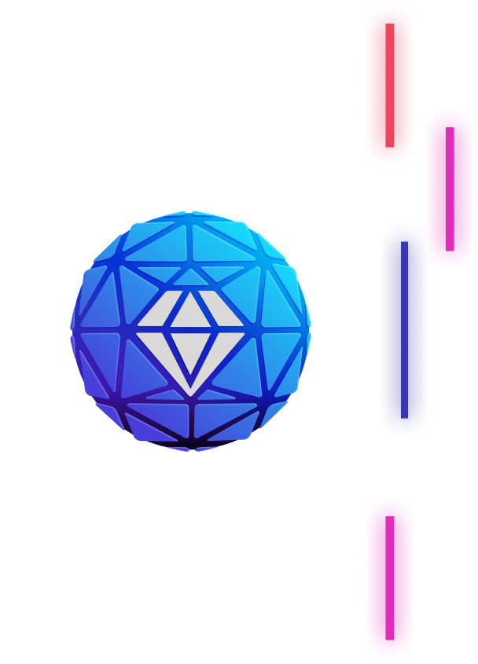

TonSwap is a fully decentralized on-chain AMM/DEX for TON. TonSwap implements the Uniswap algorithm in a set of FunC contracts designed from scratch for the TON distributed architecture. It allows traders to swap tokens and liquidity providers to support these trades and earn rewards. TonSwap is an excellent example of how to implement a complex app that follows the App Safety Guidelines end to end.
TON @ DeFi.org
Together we are building an ecosystem of fully decentralized financial applications on
